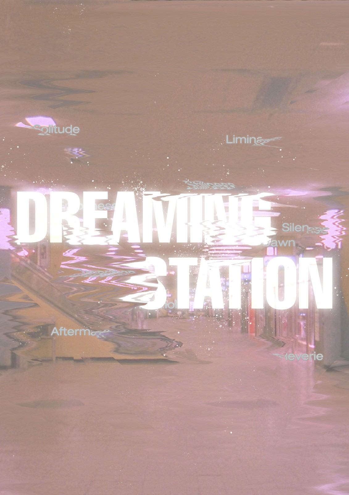

07 / 07.jpg'}))">
Platform
00
Dreaming Station
최슬아
@sseul.design사람들로 붐비는 환승역도 새벽이 되면 아무도 없는 낯선 공간이 됩니다. 익숙한 장소에서 느껴지는 조용하고 묘한 분위기, 마치 현실에서 잠시 벗어난 듯한 그 순간을 담았습니다. 평범했던 환승역이 잠시 다른 세계처럼 느껴지는 새벽의 감각을 표현했습니다.